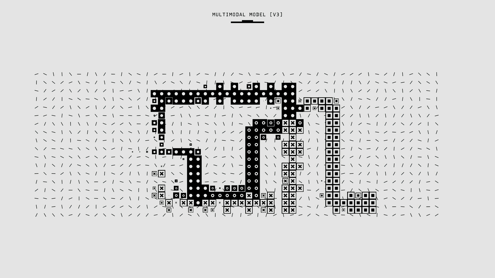
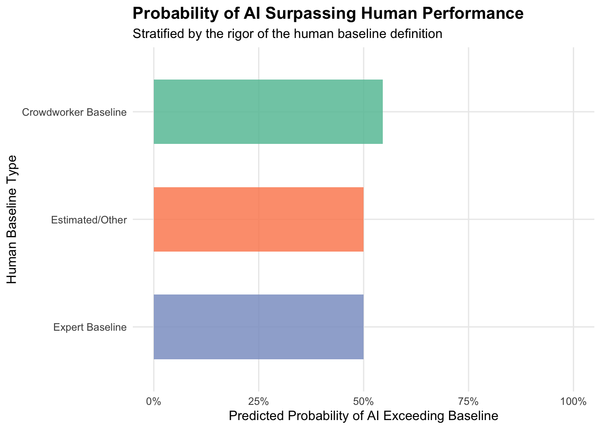

library(readr)
library(dplyr)
library(ggplot2)Predicting Superhuman AI Performance by Task Category

Introduction
The rapid pace of AI development is undeniable, with frontier models increasingly outpacing the very evaluations designed to measure them. But as these systems achieve “superhuman” status across various tasks, validating those milestones presents a unique data science challenge: the “human baseline” they are beating is almost never a constant. Depending on the test, a model might be measured against a PhD expert, an unspecialized crowdworker, or even an estimate that was never formally tested.
In this post, I want to shift from analyzing individual reasoning tasks to performing a meta-analysis on the benchmarks themselves. Using logistic regression in R, we will explore whether the type of human baseline (e.g., expert vs. crowdworker) statistically impacts the likelihood of an AI model officially surpassing it.
Imports
1.Data Source & Pre-processing
This analysis investigates the cognitive domains where AI exceeds human capabilities using the AI Benchmarks vs Human Baselines Kaggle dataset.
benchmarks <- read_csv("data/benchmarks.csv", show_col_types = FALSE)
head(benchmarks)# A tibble: 6 × 25
benchmark short_name release_year creator_org n_items modality reasoning_type
<chr> <chr> <dbl> <chr> <dbl> <chr> <chr>
1 ARC-AGI-1 ARC-AGI-1 2019 Francois C… 1000 visual_… abstract_indu…
2 ARC-AGI-2 ARC-AGI-2 2025 ARC Prize … 1240 visual_… abstract_indu…
3 ARC-AGI-3 ARC-AGI-3 2026 ARC Prize … NA interac… abstract_indu…
4 ConceptARC ConceptARC 2023 Santa Fe I… 160 visual_… conceptual_an…
5 RAVEN / I… RAVEN 2019 UCLA (Zhan… 70000 visual analogical
6 Bongard-L… Bongard-L… 2020 NVIDIA (Ni… 12000 visual concept_induc…
# ℹ 18 more variables: metric_unit <chr>, human_baseline_exists <dbl>,
# human_baseline_pct <dbl>, human_baseline_type <chr>,
# human_baseline_n <dbl>, human_baseline_note <chr>,
# best_ai_at_release_pct <dbl>, best_ai_at_release_system <chr>,
# best_ai_at_release_year <dbl>, best_ai_latest_pct <dbl>,
# best_ai_latest_system <chr>, best_ai_latest_asof <chr>,
# ai_exceeds_human <dbl>, saturation_status <chr>, benchmark_license <chr>, …2. Feature Engineering
To build our model, we need to filter out benchmarks that lack a measured baseline (where ai_exceeds_human is missing). We will also group the granular human_baseline_type into broader categories so our model has sufficient data per group.
clean_benchmarks <- benchmarks |>
filter(!is.na(ai_exceeds_human), !is.na(human_baseline_type)) |>
mutate(
baseline_category = case_when(
grepl("expert", human_baseline_type) ~ "Expert Baseline",
grepl("crowd|annotator", human_baseline_type) ~ "Crowdworker Baseline",
TRUE ~ "Estimated/Other"
),
baseline_category = as.factor(baseline_category)
)
head(clean_benchmarks |> select(benchmark, baseline_category, ai_exceeds_human))# A tibble: 6 × 3
benchmark baseline_category ai_exceeds_human
<chr> <fct> <dbl>
1 ARC-AGI-1 Crowdworker Baseline 1
2 ARC-AGI-2 Crowdworker Baseline 0
3 ARC-AGI-3 Crowdworker Baseline 0
4 ConceptARC Crowdworker Baseline 1
5 RAVEN / I-RAVEN Crowdworker Baseline 1
6 Bongard-LOGO Expert Baseline 03. Machine Learning: Logistic Regression
We will train a logistic regression model using glm() to see if the baseline category can predict the probability that an AI has exceeded human performance (ai_exceeds_human = 1).
log_model <- glm(ai_exceeds_human ~ baseline_category, data = clean_benchmarks, family = "binomial")
summary(log_model)$coefficients Estimate Std. Error z value Pr(>|z|)
(Intercept) 0.1823216 0.6055279 0.3010952 0.7633419
baseline_categoryEstimated/Other -0.1823216 1.1690441 -0.1559578 0.8760663
baseline_categoryExpert Baseline -0.1823216 0.8755936 -0.2082262 0.8350523While the sample size of major industry benchmarks is relatively small, this model structure allows us to mathematically examine the odds of AI saturation based purely on the rigor of the human competition.
4. Data Wrangling for Visualization
Next, we extract the predicted probabilities from our model to visualize exactly how the baseline type affects the perception of AI supremacy. We will do this by generating predictions for each unique baseline category and using the type “response” to get probabilities.
category_preds <- clean_benchmarks |>
distinct(baseline_category) |>
mutate(
predicted_prob = predict(
log_model,
newdata = pick(baseline_category),
type = "response"
)
)5. Visualization
We will use ggplot2 to plot these predicted probabilities:
ggplot(category_preds, aes(x = reorder(baseline_category, predicted_prob), y = predicted_prob, fill = baseline_category)) +
geom_col(alpha = 0.85, width = 0.6) +
coord_flip() +
scale_y_continuous(labels = scales::percent_format(), limits = c(0, 1)) +
scale_fill_brewer(palette = "Set2") +
labs(
title = "Probability of AI Surpassing Human Performance",
subtitle = "Stratified by the rigor of the human baseline definition",
x = "Human Baseline Type",
y = "Predicted Probability of AI Exceeding Baseline"
) +
theme_minimal() +
theme(
legend.position = "none",
plot.title = element_text(face = "bold", size = 14),
panel.grid.minor = element_blank()
)
Conclusion
This analysis reveals exactly why generalized “superhuman AI” claims require careful scrutiny. When evaluating benchmark saturation, the probability of an AI clearing the threshold behaves very differently depending on whether it is competing against subject-matter experts or unspecialized crowdworkers. As data professionals, understanding these underlying evaluation mechanics—and verifying the actual datasets behind the headlines—is essential before accepting high-level marketing claims!